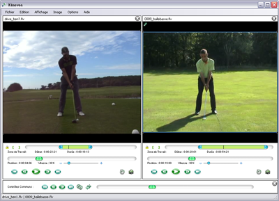

Comparer
Ce pas-à-pas vous guide dans les opérations suivantes :
Ouvrir deux Vidéos, Synchroniser les Deux Gestes sur une Image, Renverser l'Image.
1. Ouvrir deux vidéos
Préparez l'espace de travail à l'aide du menu : Affichage > Deux Écrans de Lecture/Analyse
Ouvrez ensuite successivement les vidéos des deux séquences à comparer.

Les
deux vidéos peuvent être contrôlées indépendamment l'une de l'autre à
l'aide des contrôles situés directement sous les vidéos.
Le panel inférieur contient une nouvelle série de contrôles qui agissent, eux, sur les deux vidéos simultanément.
2. Synchroniser les deux gestes sur une image
Déplacez vous dans chaque vidéo jusqu'à atteindre un évènement commun
de référence. (par exemple une impulsion ou une réception de saut, un
impact raquette/balle ou pied/ballon, etc...)
Cliquez alors sur le bouton de synchronisation : 
Déplacez vous maintenant dans la vidéo à l'aide des contrôles de lecture communs.
Remarque: Dans chaque vidéo, les marqueurs de temps sont maintenant relatifs au point de synchronisation.
Utilisez les boutons de navigation commune image par image ( et )
ainsi que la barre de défilement commune pour comparer les positions
successives conduisant à l'évènement de référence. Étudiez par
exemple les différences gestuelles ou temporelles dans le déroulement
du geste.
Utilisez le bouton de lecture commun pour une analyse dynamique des différences.
Vous pouvez utiliser cette fonction en combinaison avec la fonction de ralentit, afin d'améliorer la qualité de la comparaison.
Si vous déplacez l'une des deux vidéos indépendamment de l'autre à
l'aide de ses contrôles individuels, vous pouvez effectuer une
"resynchronisation" afin d'imprimer le même déplacement à la seconde
vidéo. Pour cela utilisez le raccourci clavier : F9.
3. Renverser l'image d'une des vidéos
Les vidéos doivent être en mode Analyse. Cliquez dans l'espace vide de
la vidéo dont vous voulez inverser l'image pour la rendre active.
La vidéo est active lorsqu'elle est entourée d'une bordure bleue.
Utilisez le menu : Image > Miroir pour inverser la vidéo latéralement.